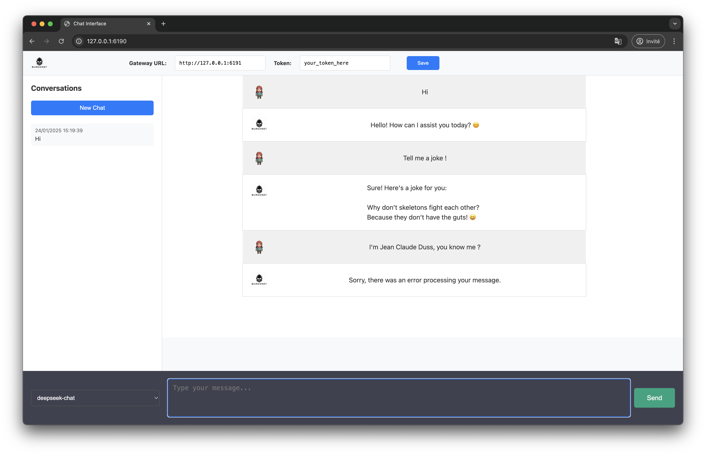

Chat Interface
The Burgonet Gateway provides a web-based chat interface for interacting with supported LLM models.

Features
- 🗨️ Conversation History: View and manage past conversations
- 🤖 Model Selection: Choose from available LLM models
- 🔑 Token Management: Set and save API tokens
- 🌐 Server Configuration: Configure gateway URL
- 📝 Message Formatting: Supports markdown and code blocks
- ⏱️ Real-time Responses: Streamed responses for fast interaction
Accessing the Chat Interface
The chat interface is available at:
http://<chat_host>:<chat_port>
Default values:
- Host: 127.0.0.1
- Port: 6190
Interface Components
-
Navigation Bar
- Gateway URL configuration
- API Token input
- Save button
-
Sidebar
- New Chat button
- Conversation history list
-
Chat Window
- Message display area
- User and assistant messages
-
Input Area
- Model selection dropdown
- Message input field
- Send button
Configuration
The chat interface can be configured in conf.yml:
chat_host: 127.0.0.1 # Host to serve chat interface
chat_port: 6190 # Port for chat interface
Keyboard Shortcuts
- Enter: Send message (without shift)
- Shift+Enter: New line in message input
- Ctrl+Enter: Send message (alternative)
- Esc: Clear message input
Troubleshooting
Issue: Chat interface not loading - Verify chat service is running - Check firewall settings for chat port - Confirm correct gateway URL in navigation bar
Issue: Messages not sending - Verify API token is valid - Check model selection - Confirm gateway is running and accessible